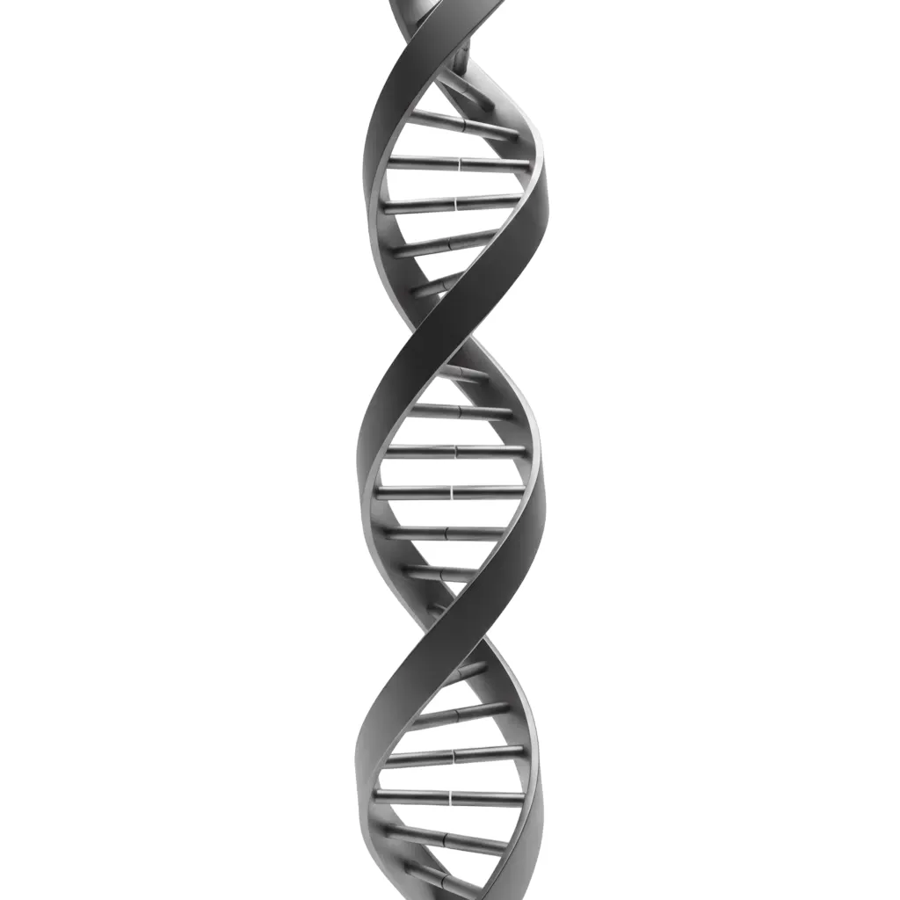

1
Upload
Add a front photo and a side profile — that's all MorphIndex needs to start.
MorphIndex turns your facial photos into a living scorecard — structured metrics, a prioritized roadmap, and proof of progress as you go.
For people who prefer data over opinions.
The method
Scan, understand, plan, repeat — each cycle sharpens your index.
Add a front photo and a side profile — that's all MorphIndex needs to start.
Get a full breakdown across vitality, proportions, definition, and traits.
Receive lifestyle and clinical options ranked by expected impact on your profile.
Execute your plan, simulate outcomes with MorphAI, and re-scan to confirm gains.
Side-profile analysis included with every scan.
Scoring model
Every scan scores you across independent layers of facial morphology.
 40+
signals
40+
signals
Skin tone, feature clarity, and overall facial freshness
Thirds, spacing, and symmetry across the face

5 criteriaJaw contour, cheek structure, and bone visibility
8
markers
Masculine and feminine morphological signatures
Beyond the initial scan: trends, simulations, guidance, and community benchmarks — unified.
A step-by-step roadmap built from your unique morphology profile.
A single score synthesizing 70+ anatomical ratios across all four dimensions.
Conversational guidance about your face — ask anything, get structured answers.
Line up scans side by side and watch individual metrics shift over time.
Visualize potential changes before committing to any intervention.
See where you stand among members and track your climb over time.
Each scan surfaces granular detail — from skin vitality to zone-by-zone proportional ratios.
100+ tracked variables per session
Case study
Disciplined habits, logged scans, visible index growth — documented month by month.
Index growth over 24 months of consistent effort
Months 0–8 · establishing routines
Months 8–14 · first measurable shifts
Months 14–26 · deeper contour changes
Months 26–30 · consolidating gains
Progress isn't accidental — it's the product of showing up.
Members who gain the most treat every scan as a checkpoint, not a verdict. MorphIndex keeps that rhythm alive.
Growth model
MorphIndex models where your score could land if you follow the recommended path.
Built for
A score alone changes nothing. The members who transform treat MorphIndex as a starting line — then do the work between scans.
If that sounds like you, you're in the right place.
Unfiltered feedback from people who scan regularly.
"No hype, just numbers I can act on. Whether I'm optimizing or simply understanding my structure, MorphIndex is the most consistent tool I've used."
"I knew my weak spots vaguely — MorphIndex quantified them. Replacing guesswork with metrics completely changed how I approach improvement."
"My composite score looked fine, but I needed detail on texture and under-eye volume. MorphIndex was the first app to give me specifics I could actually use."
"Strengths, gaps, priorities — laid out clearly. That alone justified signing up."
"Every re-scan surfaces something I missed. The personalized plans keep me accountable without feeling generic."
"Clinical options plus daily habits — all ranked by impact. I haven't found anything else this precise."
Join 120,000+ members who measure before they optimize.
Create my profileOne scan. Full picture. No guesswork.